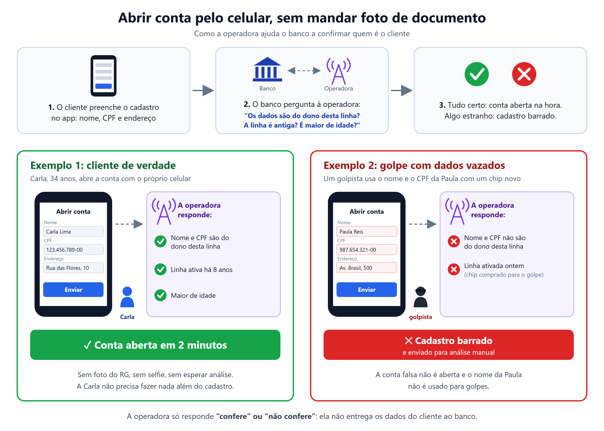
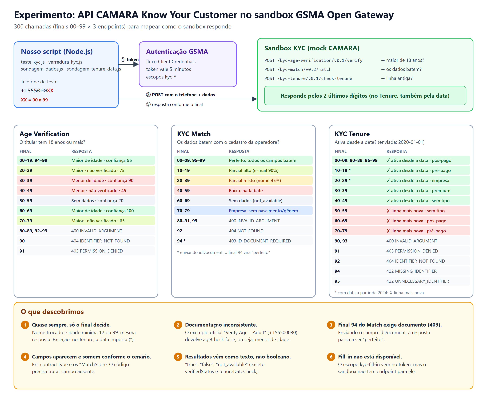

<title>Experimento KYC pela Operadora</title>
<meta name="claude:viewport-fit-sides" content="cover">
<link rel="preconnect" href="https://fonts.googleapis.com">
<link rel="preconnect" href="https://fonts.gstatic.com" crossorigin>
<link rel="stylesheet" href="https://fonts.googleapis.com/css2?family=IBM+Plex+Sans:wght@400;500;600;700&family=IBM+Plex+Serif:wght@600&family=IBM+Plex+Mono:wght@400;500&display=swap">
<style>
  /* Layout: memorando de uma coluna (~68ch), figuras largas saindo da coluna, quadro de números no topo */
  :root {
    --bg: #fbfcfd;
    --surface: #f0f3f6;
    --fg: #17212b;
    --muted: #556270;
    --line: #d8dee5;
    --accent: #0b6e69;
    --ok: #15803d;
    --warn: #b45309;
    --bad: #b91c1c;
    --figure-bg: #ffffff;
    --font-display: "IBM Plex Serif", Georgia, serif;
    --font-body: "IBM Plex Sans", "Segoe UI", Arial, sans-serif;
    --font-mono: "IBM Plex Mono", Consolas, monospace;
  }
  @media (prefers-color-scheme: dark) {
    :root:not([data-theme="light"]) {
      --bg: #11171d; --surface: #1a232c; --fg: #e6ebf0; --muted: #9aa8b5; --line: #2c3843;
      --accent: #4fc1b9; --ok: #4ade80; --warn: #fbbf24; --bad: #f87171; --figure-bg: #ffffff;
      color-scheme: dark;
    }
  }
  :root[data-theme="dark"] {
    --bg: #11171d; --surface: #1a232c; --fg: #e6ebf0; --muted: #9aa8b5; --line: #2c3843;
    --accent: #4fc1b9; --ok: #4ade80; --warn: #fbbf24; --bad: #f87171; --figure-bg: #ffffff;
    color-scheme: dark;
  }
  body {
    background: var(--bg); color: var(--fg);
    font-family: var(--font-body); font-size: 1.0625rem; line-height: 1.6;
    padding-left: max(16px, env(safe-area-inset-left, 0px));
    padding-right: max(16px, env(safe-area-inset-right, 0px));
    padding-block: 3rem 4rem;
  }
  main { max-width: 68ch; margin: 0 auto; display: flex; flex-direction: column; gap: 2.75rem; }
  section { display: flex; flex-direction: column; gap: 0.9rem; min-width: 0; }
  .eyebrow { font-family: var(--font-mono); font-size: 0.8rem; letter-spacing: 0.08em; text-transform: uppercase; color: var(--accent); }
  h1 { font-family: var(--font-display); font-weight: 600; font-size: clamp(1.9rem, 4.5vw, 2.6rem); line-height: 1.15; margin: 0; text-wrap: balance; }
  h2 { font-family: var(--font-display); font-weight: 600; font-size: 1.45rem; line-height: 1.25; margin: 0; text-wrap: balance; }
  p { margin: 0; }
  .lede { font-size: 1.2rem; color: var(--fg); }
  .muted { color: var(--muted); }
  header { display: flex; flex-direction: column; gap: 0.8rem; }

  .numbers { display: grid; grid-template-columns: repeat(4, minmax(0, 1fr)); border-top: 2px solid var(--fg); border-bottom: 1px solid var(--line); }
  .numbers div { padding: 0.9rem 0.75rem 0.9rem 0; display: flex; flex-direction: column; gap: 0.2rem; }
  .numbers strong { font-family: var(--font-mono); font-weight: 500; font-size: 1.7rem; font-variant-numeric: tabular-nums; line-height: 1.1; }
  .numbers span { font-size: 0.85rem; color: var(--muted); line-height: 1.35; }
  @media (max-width: 560px) { .numbers { grid-template-columns: repeat(2, minmax(0, 1fr)); } }

  .table-wrap { overflow-x: auto; }
  table { width: 100%; border-collapse: collapse; font-size: 0.97rem; }
  th, td { text-align: left; padding: 0.6rem 0.75rem 0.6rem 0; border-bottom: 1px solid var(--line); vertical-align: top; }
  th { font-size: 0.75rem; letter-spacing: 0.07em; text-transform: uppercase; color: var(--muted); font-weight: 600; }
  td code, p code, li code { font-family: var(--font-mono); font-size: 0.86em; background: var(--surface); padding: 0.05em 0.35em; border-radius: 3px; }

  figure { margin: 0; display: flex; flex-direction: column; gap: 0.6rem; }
  figure .frame { background: var(--figure-bg); border: 1px solid var(--line); border-radius: 6px; overflow: hidden; }
  figure img { display: block; width: 100%; height: auto; max-width: 100%; }
  figcaption { font-size: 0.88rem; color: var(--muted); }
  @media (min-width: 1100px) { figure.wide { width: min(1100px, calc(100vw - 64px)); margin-left: calc((68ch - min(1100px, calc(100vw - 64px))) / 2); } }

  ol.findings { margin: 0; padding: 0; list-style: none; counter-reset: f; display: flex; flex-direction: column; gap: 0.85rem; }
  ol.findings li { counter-increment: f; display: grid; grid-template-columns: 2rem minmax(0, 1fr); gap: 0.5rem; }
  ol.findings li::before { content: counter(f); font-family: var(--font-mono); font-weight: 500; color: var(--accent); padding-top: 0.05rem; }
  ol.findings b { font-weight: 600; }

  ul.plain { margin: 0; padding-left: 1.2rem; display: flex; flex-direction: column; gap: 0.45rem; }
  .tag { font-family: var(--font-mono); font-size: 0.8rem; padding: 0.1rem 0.45rem; border-radius: 3px; border: 1px solid currentColor; white-space: nowrap; }
  .tag.ok { color: var(--ok); } .tag.warn { color: var(--warn); } .tag.bad { color: var(--bad); }
  .note { border-left: 3px solid var(--warn); padding: 0.2rem 0 0.2rem 1rem; }
  footer { font-size: 0.85rem; color: var(--muted); border-top: 1px solid var(--line); padding-top: 1rem; }
</style>

<main>
  <header>
    <span class="eyebrow">Sandbox GSMA Open Gateway · 15/10/2026</span>
    <h1>Operadora confirmando o cadastro do cliente: o que testamos com a API Know Your Customer</h1>
    <p class="lede">Testamos a API padrão CAMARA que deixa uma empresa perguntar à operadora se os dados de um cliente batem com o dono da linha. Mapeamos todas as respostas do ambiente de testes, montamos um caso de uso de abertura de conta e encontramos pontos de atenção para uma integração real.</p>
  </header>

  <div class="numbers" role="list">
    <div role="listitem"><strong>3</strong><span>funcionalidades testadas</span></div>
    <div role="listitem"><strong>300</strong><span>chamadas feitas à API</span></div>
    <div role="listitem"><strong>32</strong><span>respostas diferentes mapeadas</span></div>
    <div role="listitem"><strong>6</strong><span>pontos de atenção encontrados</span></div>
  </div>

  <section>
    <h2>O que a API responde</h2>
    <p>A empresa envia o número de celular do cliente e os dados que ele informou. A operadora compara com o próprio cadastro e responde apenas “confere” ou “não confere”. Ela não entrega os dados do cliente.</p>
    <div class="table-wrap">
      <table>
        <thead><tr><th>Funcionalidade</th><th>Pergunta à operadora</th><th>Exemplo de uso</th></tr></thead>
        <tbody>
          <tr><td>KYC Match</td><td>O nome, CPF, endereço e e-mail informados são do dono desta linha?</td><td>Abertura de conta, cadastro em app</td></tr>
          <tr><td>KYC Tenure</td><td>Esta linha está ativa desde a data informada? É pré ou pós-paga?</td><td>Detectar chip comprado para golpe</td></tr>
          <tr><td>Age Verification</td><td>O titular da linha tem a idade mínima?</td><td>Apostas, bebidas, conteúdo adulto</td></tr>
        </tbody>
      </table>
    </div>
  </section>

  <section>
    <h2>Caso de uso: abrir conta sem enviar foto de documento</h2>
    <p>Um cliente de verdade preenche o cadastro e a conta abre em minutos, sem selfie e sem análise manual. Um golpista que usa dados vazados de outra pessoa com um chip recém-comprado é barrado, porque os dados não são do dono da linha e a linha é nova.</p>
    <figure class="wide">
      <div class="frame"></div>
      <figcaption>Cenário de aplicação, para público não técnico.</figcaption>
    </figure>
  </section>

  <section>
    <h2>Como testamos</h2>
    <p>O ambiente de testes da GSMA não consulta operadoras de verdade: ele devolve respostas prontas conforme os <b>dois últimos dígitos</b> do telefone (no Tenure, também conforme a data informada). Fizemos um script que chama os 3 endpoints com os finais 00 a 99 e agrupa as respostas iguais. Depois conferimos se os dados enviados influenciam o resultado.</p>
    <figure class="wide">
      <div class="frame"></div>
      <figcaption>Diagrama técnico com a tabela completa de respostas por final de telefone.</figcaption>
    </figure>
  </section>

  <section>
    <h2>O que descobrimos</h2>
    <ol class="findings">
      <li><span><b>O sandbox ignora quase todos os dados enviados.</b> Nome trocado e idade mínima de 12 ou de 99 anos deram a mesma resposta: no Match e na verificação de idade, só o final do telefone decide. A exceção é o Tenure: em duas faixas de números, a data informada muda a resposta, simulando uma linha ativada entre 2023 e 2024. Serve para testar se o nosso sistema trata cada tipo de resposta, mas não mostra a qualidade real da conferência.</span></li>
      <li><span><b>A documentação tem um erro.</b> O exemplo oficial chamado “adulto” (<code>+155500030</code>) devolve “menor de idade”. Sem o teste, teríamos confiado no exemplo.</span></li>
      <li><span><b>Algumas operações exigem documento.</b> Um dos cenários do Match recusa a consulta sem o número do documento e aceita quando ele é enviado.</span></li>
      <li><span><b>A resposta muda de formato conforme o caso.</b> Campos como tipo de contrato e notas de semelhança aparecem em alguns cenários e somem em outros. O sistema precisa tratar campo ausente.</span></li>
      <li><span><b>Os resultados vêm como texto</b> (<code>"true"</code>, <code>"false"</code>, <code>"not_available"</code>), com uma terceira opção, “sem dados”, que precisa de regra própria.</span></li>
      <li><span><b>O preenchimento automático de cadastro (Fill-in) não está disponível</b> no sandbox, embora a permissão apareça no token.</span></li>
    </ol>
  </section>

  <section>
    <h2>Limites deste experimento</h2>
    <p class="note">Os resultados mostram como a API se comporta e como integrar. Eles não medem a precisão real, porque o sandbox é simulado. Disponibilidade, cobertura e preço precisam ser confirmados com cada operadora antes de qualquer decisão de produto.</p>
  </section>

  <section>
    <h2>Próximos passos sugeridos</h2>
    <ul class="plain">
      <li>Definir a regra de decisão do cadastro: o que aprova, o que vai para análise manual e o que bloqueia, incluindo o caso “sem dados”.</li>
      <li>Combinar com o primeiro experimento (localização do aparelho) num fluxo único de prevenção a fraude.</li>
      <li>Consultar as operadoras brasileiras sobre acesso às APIs KYC em produção e o modelo de cobrança.</li>
    </ul>
  </section>

  <footer>Experimento feito com scripts Node.js contra <span style="font-family: var(--font-mono)">open-gateway-sandbox.gsma.com</span>. Os scripts e as imagens estão na pasta <span style="font-family: var(--font-mono)">know_your_customer</span> do projeto.</footer>
</main>
